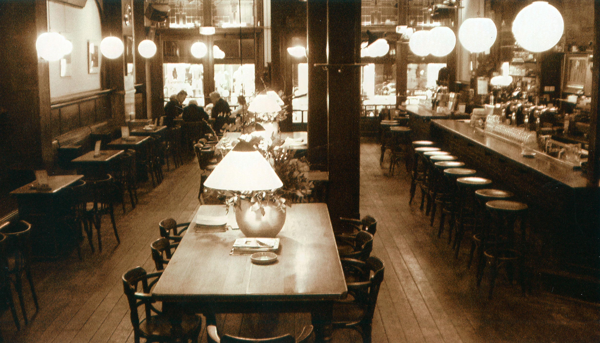
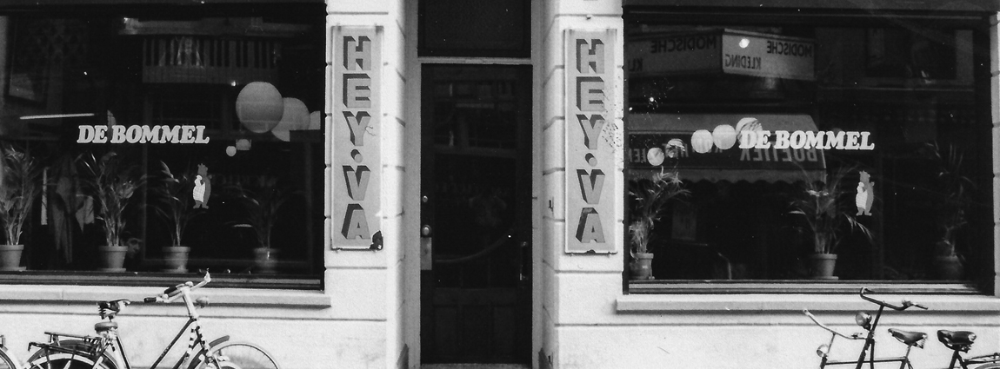
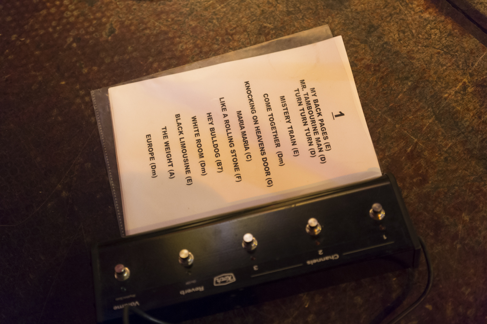
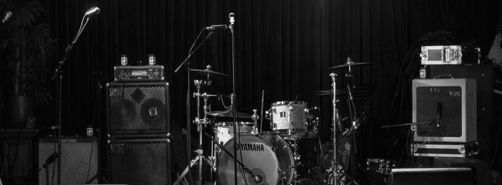
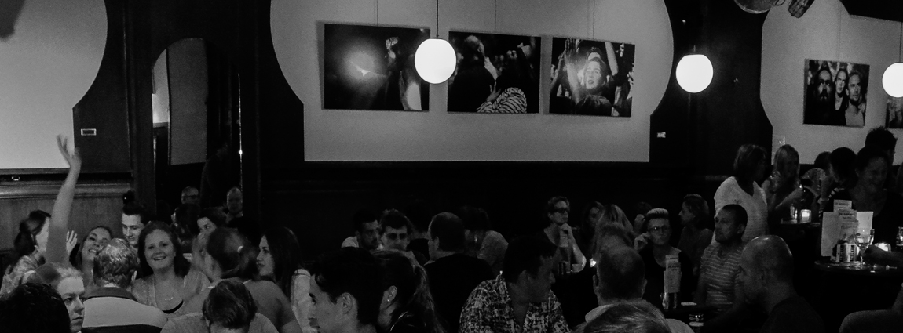
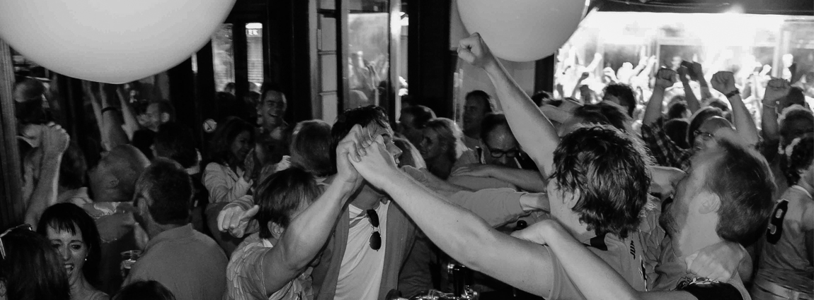
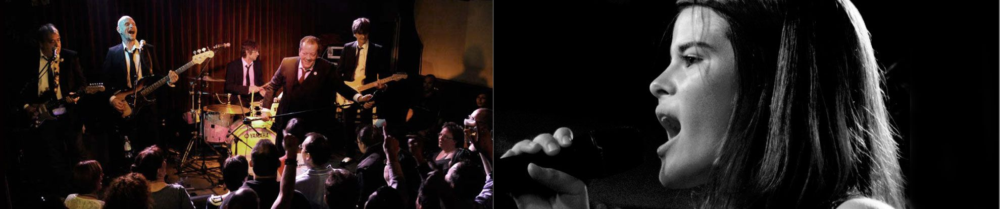
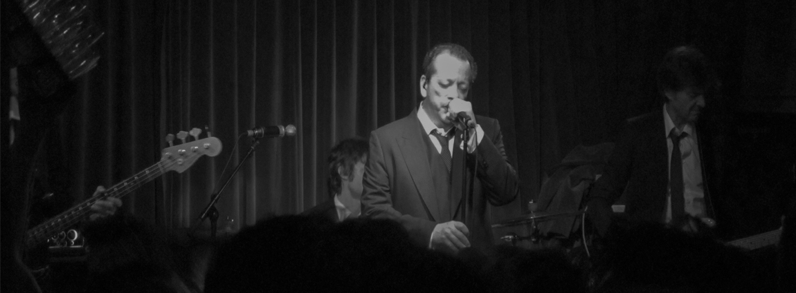

Moriaans-hoofd
De eerste tapperij in de Halstraat, de voorganger van De Bommel. Bier werd nog gedronken uit kelken.

Feestweekenden, quizavonden, Clipcafé en jong talent op het podium.
Reserveren voor een speciale avond? Mail naar cafedebommel@gmail.com of stuur een berichtje via Instagram.
Café De Bommel is een plek waar mensen elkaar vinden en waar het fijne samenzijn bij een drankje voorop staat. Bruisende feestweekenden wisselen zich af met intieme liveoptredens en persoonlijke onderonsjes. Voor iedereen is er wat te vinden.


Met regelmaat maken we op zondag het podium vrij voor liveoptredens. Van jonge, startende bandjes tot oude rotten in het vak. Kwaliteit staat altijd voorop. Zelfs Herman Brood en The Wild Romance lieten De Bommel hier twee keer op zijn grondvesten trillen.



Van de eerste tapperij tot het BommelBoek. Schuif door de geschiedenis.
De eerste tapperij in de Halstraat, de voorganger van De Bommel. Bier werd nog gedronken uit kelken.
Vanaf de jaren dertig is het Carl Frei-orgel de blikvanger. Tot ver in de jaren vijftig zorgt het voor de dansmuziek. In 1968 verhuist het naar museum Van Speeldoos tot Pierement in Utrecht.
Het bord met De Bommel komt boven de ingang. Tot op vandaag een herkenningspunt voor Bredanaars en ver daarbuiten.
Op 17 oktober 1982 heropent De Bommel onder Frans van den Brand, Pieter Zuydwijk en Cees Verberk. De basis van het café van nu.
De dichter, schilder en rock-’n-rollrebel liet met The Wild Romance café De Bommel tot twee keer toe op zijn grondvesten trillen.
Pullen, lederhosen en worst. Sindsdien elk jaar in september terug.
Na jaren van originele cd's doet de muziekcomputer zijn intrede. Heiligschennis, maar het repertoire is sindsdien eindeloos.
De Belgische rockers, het ‘Doe Maar’ van België, komen naar Breda. Nog voor er een noot klinkt is er al een run op de bar. (bron: BN DeStem)
Alle verhalen, foto's en anekdotes in één boek, gepresenteerd voor een uitverkochte zaal.
Waar wat georganiseerd wordt, gebeuren mooie dingen. Die leggen we zoveel mogelijk vast: van carnaval en bierfeesten tot WK’s, EK’s en Bier & Ballen. Ook de liveoptredens komen regelmatig in het archief. Zo blijf je op de hoogte, ook als je er niet bij was.


| Maandag | 11.00 – 01.00 |
| Dinsdag | 10.30 – 01.00 |
| Woensdag | 10.30 – 01.00 |
| Donderdag | 10.30 – 02.00 |
| Vrijdag | 10.30 – 02.00 |
| Zaterdag | 10.30 – 02.00 |
| Zondag | 13.30 – 01.00 |